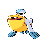

Inside the search space
A Pokémon build has
more than one kind of choice.
Some choices are names. Others are numbers. And some choices change what you’re allowed to choose next.
One team slot / 06

Pelipper
Sitrus Berry
Pick a name, not a number.
A held item is a categorical variable: choose one option from a set. There is no numerical “halfway” between two items.
↳Species, moves, abilities, and natures are also categorical choices.
Move one whole point.
Stat-point allocations are integer variables. Transfer one point from Special Attack to Speed; the total budget stays the same.
Sp. Attack
Speed
66 / 66 points
32 HP · other stats 0
32 HP · other stats 0
↳Whole-number steps, with constraints: 66 points in total and at most 32 in each stat.
One choice reshapes another.
The ability is categorical, but its available options depend on the species. Switch Pokémon to see the allowed set change.
Available abilities for Pelipper
Keen EyeDrizzleRain Dish
↳Conditional describes a dependency between choices, rather than a third numeric data type.
A slice of the
candidate build
candidate build
[PelipperSitrus Berry23 SpA · 11 Spe…]
The build is the input.
Expected win rate is the objective.
Expected win rate is the objective.